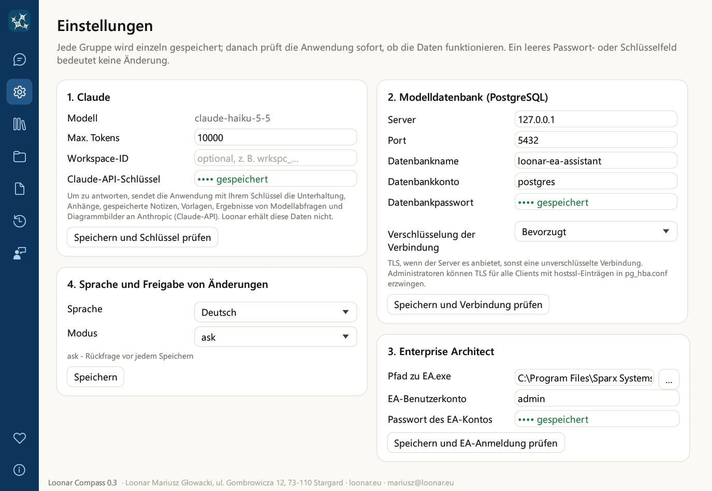
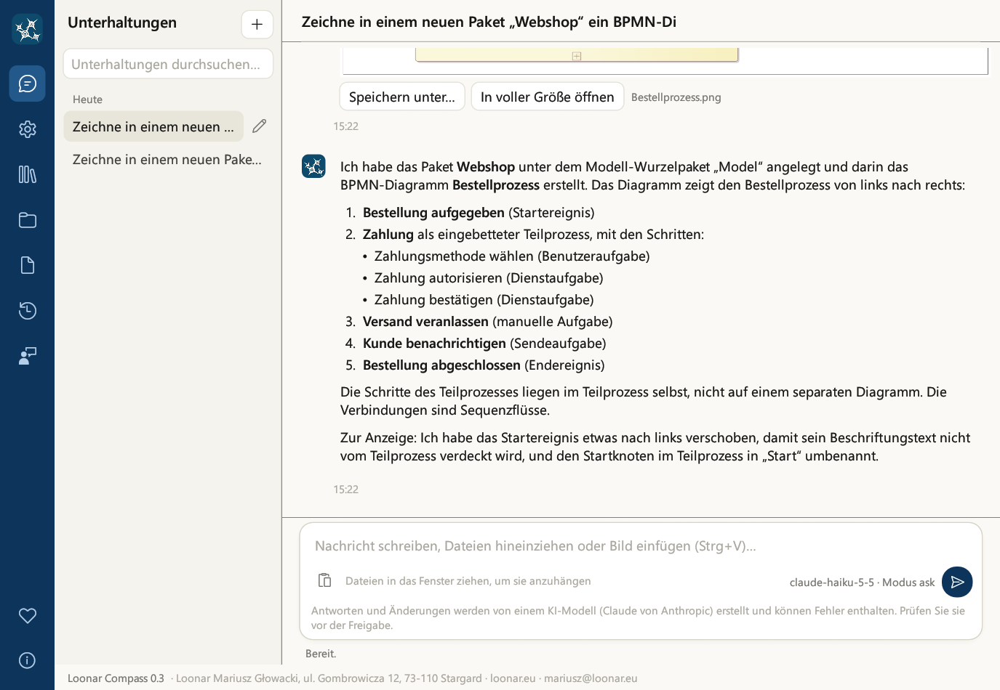
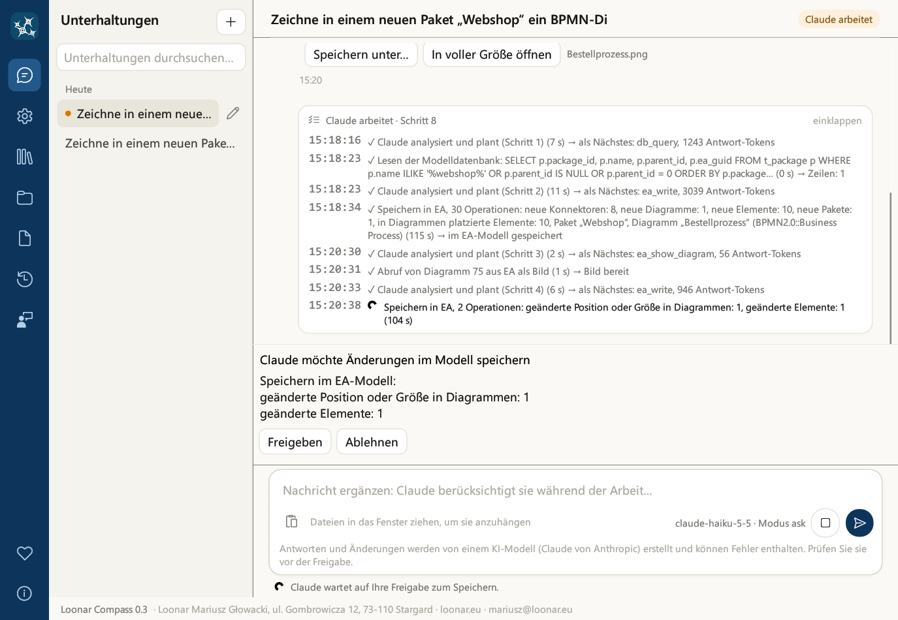
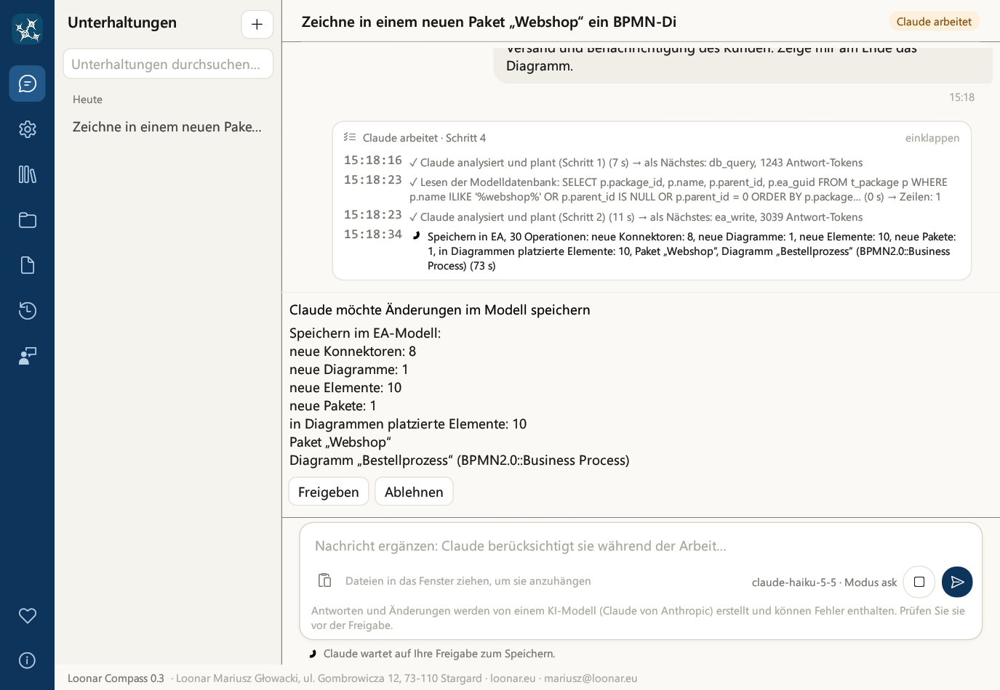

Loonar Compass
Benutzerhandbuch
Version 0.3 · Oktober 2026
Loonar Mariusz Głowacki
ul. Gombrowicza 12, 73-110 Stargard
loonar.eu · mariusz@loonar.eu
ul. Gombrowicza 12, 73-110 Stargard
loonar.eu · mariusz@loonar.eu
Loonar Compass ist eine eigenständige Desktop-Anwendung für Windows: ein KI-Assistent für die Arbeit mit einem Enterprise-Architect-Modell (Sparx Systems). Sie schreiben ihm in natürlicher Sprache, und er:
Die Anwendung nutzt das Sprachmodell Claude Haiku 5.5 (Anthropic) über das Internet. Mit dem EA-Modell verbindet sie sich auf zwei Wegen: Sie liest es direkt aus der PostgreSQL-Datenbank und schreibt über Enterprise Architect, das im Hintergrund läuft, mit dem in den Einstellungen angegebenen Benutzerkonto des Modells.
Die Oberfläche und die Antworten des Assistenten sind in vier Sprachen verfügbar: Polnisch, Englisch, Deutsch und Französisch (Kapitel 5). Die Anwendung ist kostenlos, auch für die kommerzielle Nutzung (Kapitel 18).
claude oder assistent, aber das Konto muss existieren. Anmeldename und Passwort geben Sie in den Einstellungen der Anwendung ein.| Was | Details |
|---|---|
| System | Windows 10 oder Windows 11 (64 Bit) |
| Enterprise Architect | Auf demselben Computer installiert, mit gültiger Lizenz. Die Anwendung startet es im Hintergrund; währenddessen belegt es einen Lizenzplatz. |
| EA-Modell | Repository in einer PostgreSQL-Datenbank, mit aktivierter Benutzersicherheit. Benötigt werden: Server, Port, Datenbankname sowie Konto und Passwort der Datenbank. |
| Benutzerkonto des Modells | Anmeldename und Passwort eines im EA-Modell definierten Benutzers. Am besten ein eigenes Konto nur für den Assistenten, damit seine Änderungen und Sperren getrennt sichtbar sind und nicht mit Ihren kollidieren. |
| Claude-API-Schlüssel | Ein Schlüssel aus der Anthropic Console. |
| Internet | Verbindung zu api.anthropic.com über HTTPS, direkt oder über einen Proxy (Kapitel 14). |
| Confluence (optional) | Confluence Cloud oder Data Center, nur zum Veröffentlichen von Seiten durch den Assistenten: Confluence-Adresse, Token und Bereichsschlüssel (Kapitel 9). Auch ohne diese Angaben entstehen Seiten, den Code fügen Sie dann selbst ein. |
| E-Mail-Programm (optional) | Zum Melden von Fehlern und zum Anmelden für Informationen über neue Versionen: ein in Windows als Standard eingerichtetes E-Mail-Programm, zum Beispiel Outlook. |
Starten Sie die Datei LoonarCompass-Setup-0.3.exe. Standardmäßig installieren Sie die Anwendung nur für sich selbst, ohne Administratorrechte; Windows fragt nur dann nach Administratorrechten, wenn Sie die Installation für alle Benutzer des Computers wählen. Der Installationsassistent führt Sie mit den Schaltflächen Weiter und Zurück durch die einzelnen Schritte.

EA.exe, den Sie mit der Schaltfläche … in einem Dateiauswahlfenster wählen, EA-Benutzerkonto und Passwort des EA-Kontos) sowie den Freigabemodus.
Auf der Seite „Zielordner“ wählen Sie, für wen Sie die Anwendung installieren:
%LOCALAPPDATA%\Programs\Loonar Compass installiert und steht nur Ihrem Windows-Konto zur Verfügung.%ProgramFiles%\Loonar Compass installiert. Nach einem Klick auf Installieren fragt Windows nach Administratorrechten; werden sie nicht erteilt, wird nichts installiert. Der Ordner muss im Ordner „Programme“ liegen, in dem nur Administratoren Dateien ändern können.Unabhängig von der Installationsart werden Einstellungen und Passwörter immer für den Benutzer gespeichert, der den Installationsassistenten gestartet hat: im Benutzerprofil (%APPDATA%\Loonar Compass) und in seiner Windows-Anmeldeinformationsverwaltung, auch wenn eine andere Person die Administratorrechte bestätigt. Bei einer Installation für alle Benutzer hat jeder Benutzer eigene Einstellungen, Unterhaltungen und Passwörter.

Loonar Compass ist der neue Name von Loonar EA Assistant: Einstellungen, Unterhaltungen, Gedächtnis, Vorlagen und Passwörter der früheren Version übernimmt die Anwendung beim ersten Start automatisch.
audit_log.jsonl und templates).Links im Fenster befindet sich eine dunkelblaue Navigationsleiste mit Symbolen. Wenn Sie mit der Maus auf ein Symbol zeigen, erscheint sein Name. Ein Klick wechselt die Ansicht.
| Symbol | Inhalt |
|---|---|
| Chat | Liste der Unterhaltungen und die Unterhaltung mit dem Assistenten (Kapitel 6 und 13) |
| Einstellungen | Claude, Modelldatenbank, Enterprise Architect, Sprache und Freigabemodus, neue Versionen, Confluence (Kapitel 5) |
| Gedächtnis des Assistenten | Festlegungen, die sich der Assistent über Unterhaltungen hinweg gemerkt hat (Kapitel 11) |
| Dokumentvorlagen | Vorlagen, die der Assistent mit Inhalten aus dem Modell füllt (Kapitel 10) |
| Änderungsprotokoll des Modells | Alle Speicherungen des Assistenten im Modell, mit Export nach Excel (Kapitel 12) |
| Versionshinweise | Liste der Funktionen und bekannten Einschränkungen jeder Version |
| Fehler melden | Formular für eine Fehlermeldung mit Bildern (Kapitel 16) |
| Projekt unterstützen (Herzsymbol, unten über „Info“) | Freiwillige Unterstützung der Weiterentwicklung über suppi.pl sowie Links zu GitHub und loonar.eu |
| Info (unten in der Leiste) | Version, Eigentümer, Links, Markenhinweis, Lizenz und Open-Source-Komponenten (Kapitel 18) |
Ein orangefarbenes „!“ auf den Symbolen „Einstellungen“, „Gedächtnis des Assistenten“ und „Dokumentvorlagen“ bedeutet, dass die Übersetzung nach einem Sprachwechsel noch nicht abgeschlossen ist (Kapitel 5).
Projekt unterstützen. Loonar Compass ist kostenlos, auch für die kommerzielle Nutzung, und bleibt es. Die Schaltfläche Auf suppi.pl unterstützen öffnet die Seite https://suppi.pl/loonar, auf der Sie die Weiterentwicklung mit einem freiwilligen Beitrag unterstützen können; damit wird unter anderem ein Codesignaturzertifikat bezahlt. Unter „Weitere Möglichkeiten zu helfen“ finden Sie die Links „Quellcode auf GitHub“ und loonar.eu: Sie können Fehler und Ideen melden, die Anwendung anderen Enterprise-Architect-Nutzern empfehlen oder dem Projekt auf GitHub einen Stern geben.
Die Ansicht Einstellungen hat sechs Karten. Jede speichern Sie einzeln mit der Schaltfläche unter der Karte, und die Anwendung prüft sofort, ob die Daten funktionieren. Das Ergebnis erscheint unter der Schaltfläche: grün mit Beschreibung oder rot mit der Fehlerursache.

| Karte | Felder | Was der Test prüft |
|---|---|---|
| 1. Claude | Modell (nur Anzeige: Claude Haiku 5.5), Max. Tokens (Längenbegrenzung einer einzelnen Antwort des Modells), Claude-API-Schlüssel. Darunter ein Hinweis, was die Anwendung an Anthropic sendet (Kapitel 14). | „Speichern und Schlüssel prüfen“ sendet eine kurze Anfrage an das Modell |
| 2. Modelldatenbank (PostgreSQL) | Server, Port, Datenbankname, Datenbankkonto, Datenbankpasswort (in der Windows-Anmeldeinformationsverwaltung gespeichert), Verschlüsselung der Verbindung (siehe unten) | „Speichern und Verbindung prüfen“ verbindet sich mit der Datenbank, zählt Pakete, Elemente und Diagramme, meldet, ob die Verbindung verschlüsselt ist, und warnt vor einem Superuser-Konto |
| 3. Enterprise Architect | Pfad zu EA.exe (die Schaltfläche … öffnet die Dateiauswahl), EA-Benutzerkonto, Passwort des EA-Kontos | „Speichern und EA-Anmeldung prüfen“ startet EA im Hintergrund und meldet das angegebene Konto an (beim ersten Mal einige bis über zehn Sekunden) |
| 4. Sprache und Freigabe von Änderungen | Sprache der Anwendung; Modus: plan, ask oder auto (Kapitel 12) | Nur Speichern; nach einem Sprachwechsel bei Bedarf „Jetzt übersetzen“ |
| 5. Neue Versionen (Newsletter) | E-Mail-Adresse und „Ich möchte über neue Versionen informiert werden“, mit einem Hinweis zur Einwilligung und dem Link „Datenschutzerklärung“ (Kapitel 16) | Bereitet eine Nachricht im E-Mail-Programm vor |
| 6. Confluence | Confluence-Adresse (muss mit https:// beginnen; http:// nur für einen Server auf demselben Computer), E-Mail (nur Cloud), Token, Bereich (Schlüssel), Übergeordnete Seite (ID) (Kapitel 9) | „Speichern und Confluence-Verbindung prüfen“ verbindet sich mit dem Token und prüft, ob der Bereich verfügbar ist |
Ein leeres Passwort- oder Schlüsselfeld bedeutet „keine Änderung“. Der Hinweis gespeichert neben einem Feld zeigt an, dass der Wert bereits gespeichert ist. Alle Passwörter, der API-Schlüssel und das Confluence-Token liegen in der Windows-Anmeldeinformationsverwaltung, nicht in der Einstellungsdatei. Das Datenbankpasswort darf kein Semikolon (;) enthalten, da Enterprise Architect es sonst nicht in seiner Verbindungszeichenfolge übergeben kann.
Standardwerte. Solange noch keine Einstellungen vorhanden sind, gilt: Server, Datenbankname, EA-Benutzerkonto und Passwörter sind leer (beim Server zeigt ein grauer Hinweis „z. B. 127.0.0.1“), der Port ist 5432, das Datenbankkonto „postgres“, der Pfad zu EA.exe C:\Program Files\Sparx Systems\EA\EA.exe, der Freigabemodus ask, Max. Tokens 10000 und die Verschlüsselung „Bevorzugt“. Bestehende Einstellungen ändern weder das Setup noch die Anwendung.
Max. Tokens. Wenn der Assistent die Arbeit mit einer Meldung über eine abgeschnittene Antwort abbricht, erhöhen Sie diesen Wert (zum Beispiel auf 20000). Die Begrenzung selbst kostet nichts: Sie zahlen für den tatsächlich erzeugten Text.
Das Sperren von Paketen beim Speichern ist immer aktiviert und deshalb nicht in den Einstellungen enthalten.
Die Anwendung arbeitet in vier Sprachen: Polnisch, Englisch, Deutsch und Französisch. Die Sprache wählen Sie im Installationsprogramm (standardmäßig Englisch) und ändern sie auf der Karte „4. Sprache und Freigabe von Änderungen“:
Übersetzt werden nur das Gedächtnis und die Vorlagen. Der Unterhaltungsverlauf wird nie übersetzt: Unterhaltungen bleiben in der Sprache, in der Sie sie geführt haben.
Das Feld Verschlüsselung der Verbindung auf der Karte „2. Modelldatenbank (PostgreSQL)“ legt fest, ob der Assistent das Modell über TLS liest:
| Einstellung | Wirkung |
|---|---|
| Bevorzugt (Standard) | TLS, wenn der Server es anbietet, sonst eine unverschlüsselte Verbindung. Funktioniert mit jedem Server. |
| Erforderlich | TLS ist erforderlich: Ohne TLS stellt die Anwendung keine Verbindung her. Das Serverzertifikat wird nicht geprüft. |
| Erforderlich, mit Zertifikatsprüfung | TLS ist erforderlich, und das Serverzertifikat wird zusammen mit dem Servernamen anhand des Windows-Zertifikatspeichers geprüft, einschließlich der Zertifikate Ihres Unternehmens (eigene Zertifizierungsstellen). |
hostssl-Einträgen in der Datei pg_hba.conf erzwingen.
Die Nachricht geben Sie in der Nachrichtenkarte unten im Fenster ein. Die Karte enthält das Textfeld, die Schaltfläche Einfügen, den Namen des Modells und den aktuellen Freigabemodus sowie runde Schaltflächen: Senden und, während der Assistent arbeitet, Abbrechen. Darunter erinnert ein Hinweis daran, dass Antworten und Änderungen von einem KI-Modell erstellt werden und Fehler enthalten können: Prüfen Sie sie vor der Freigabe.
| Taste | Wirkung |
|---|---|
| Eingabe | Sendet die Nachricht |
| Umschalt + Eingabe | Neue Zeile in der Nachricht |
| ↑ in einem leeren Feld | Ruft Ihre letzte Nachricht aus dieser Unterhaltung ab; weiteres Drücken geht zu früheren zurück, ↓ wieder vorwärts |
| Strg + V | Fügt Text ein; enthält die Zwischenablage ein Bild oder Dateien, werden sie als Anhänge hinzugefügt |
Das Nachrichtenfeld wächst mit dem Text. Rechtschreibfehler werden mit dem Windows-Systemwörterbuch rot unterstrichen, in der Sprache aus den Systemeinstellungen.
An eine Nachricht können Sie bis zu 5 Dateien mit je bis zu 10 MB anhängen. Möglichkeiten: Dateien in das Fenster ziehen (aus dem Explorer oder aus einem Browser), aus der Zwischenablage einfügen (Strg + V) oder die Schaltfläche Einfügen in der Nachrichtenkarte verwenden.
| Dateityp | Was der Assistent sieht |
|---|---|
| Bilder (PNG, JPG, GIF, WebP) | Das Bild: Foto eines Whiteboards, Skizze, Screenshot. GIF und WebP erscheinen im Chat als Dateikarte, nicht als Bild. |
| Das gesamte Dokument | |
| DOCX | Den Text des Dokuments |
| Textdateien (BPMN, XML, CSV, JSON, Code…) | Den Inhalt der Datei. Textdateien müssen UTF-8-codiert sein. |
| ZIP | Die enthaltenen Dateien, jede entsprechend ihrem Typ: höchstens 20 Dateien und 30 MB insgesamt (je Datei bis zu 10 MB). Ein ZIP-Archiv innerhalb eines ZIP-Archivs wird nicht entpackt. |
| XLSX, PPTX, DOC | Werden nicht gelesen. Speichern Sie den Inhalt zum Beispiel als PDF, DOCX oder CSV. |

Was kann der Assistent? Der Assistent kennt die Funktionen der Anwendung aus den Versionshinweisen. Fragen Sie ihn: „Was kannst du in dieser Anwendung?“.
Schreiben Sie so, wie Sie einem Kollegen schreiben würden, der EA kennt. Nennen Sie Pakete und Diagramme beim Namen. Der Assistent bezeichnet Modellobjekte mit Namen, Paket und GUID. Nachfolgend Beispiele für Anfragen.
Das angezeigte Diagramm erscheint im Chat als Bild. Darunter befinden sich die Schaltflächen Speichern unter… und In voller Größe öffnen.
Der Assistent geht vom angegebenen Element entlang der Beziehungen in die Tiefe des Modells (bis zu 6 Ebenen, in eine oder beide Richtungen, optional nur entlang ausgewählter Beziehungstypen). Für jedes betroffene Element nennt er die Beziehung, über die die Auswirkung ankommt, den Pfad vom Ausgangselement und die Diagramme, auf denen das Element liegt. Das Ergebnis erhalten Sie als Beschreibung, Bild, Word-Dokument oder Excel-Arbeitsmappe.
Für eine Klasse, eine Komponente oder eine Schnittstelle findet der Assistent, wo ihre Operationen (Services) aufgerufen werden: in Sequenzdiagrammen (Nachrichten an das Element oder seine Lebenslinie) und Aktivitätsdiagrammen (Aktionen, die die Operation aufrufen), mit Paket und Aufrufer. Er nennt auch die Operationen, die in keinem Diagramm verwendet werden.
Der Assistent ändert auch Position und Größe eines Elements im Diagramm, ohne es zu entfernen (die Konnektoren bleiben erhalten), sowie Name, Beschreibung und Stereotyp eines bestehenden Diagramms. Ein Element kann er aus einem einzelnen Diagramm entfernen, ohne es aus dem Modell zu löschen.
Der Assistent setzt Schlüsselwörter von Elementen (Feld Keywords in EA) und Tagged Values und erstellt eine Diagrammlegende mit automatischer Einfärbung wie in EA: Elemente (nach Schlüsselwort, Stereotyp, Status oder Typ) oder Konnektoren (zum Beispiel nach Stereotyp) erhalten eine Farbe aus der Legende, und die Legende zeigt Wert, Farbe und Beschriftung.
Wenn Sie in Enterprise Architect dasselbe Modell geöffnet haben, arbeitet der Assistent mit Ihrem EA-Fenster zusammen:
Nur wenn das EA-Fenster nicht geöffnet ist oder ein anderes Modell zeigt, arbeitet der Assistent ohne diese Zusammenarbeit, und Sie sehen die Änderungen nach dem Aktualisieren des Pakets in EA (F5). Anmeldedaten aus der Verbindung Ihres EA-Fensters (Konto, Passwort) gehen nie an das Modell.
Der Assistent erstellt Dokumente aus den Inhalten des Modells und der Unterhaltung. Die fertige Datei erscheint im Chat als Karte mit Schaltflächen.
| Art | Inhalt | Schaltflächen im Chat |
|---|---|---|
| Word (DOCX) | Überschriften, Absätze, Listen, Tabellen, Diagramme aus EA und zuvor in der Unterhaltung gezeichnete Bilder | Öffnen, Speichern unter… |
| Excel (XLSX) | Mehrere Tabellenblätter, Kopfzeilen mit Filter und fixierter erster Zeile, Zahlen als Zahlen; zum Beispiel eine Elementliste, eine Matrix, das Ergebnis einer Auswirkungsanalyse | Öffnen, Speichern unter… |
| Bild (PNG) | Eine Matrix (zum Beispiel aus Anwendungsfällen und Anforderungen), Tabelle, Grafik, Schema. Der Assistent sieht das Ergebnis und kann es korrigieren. | Speichern unter…, In voller Größe öffnen |
| Confluence-Seite | Seitencode für den Quelltext-Editor sowie Diagramme und Bilder als Dateien | Seitencode kopieren, Bilderordner öffnen, Speichern unter… |
Der Assistent erstellt eine Seite im Format des Confluence-Quelltext-Editors (Storage-XHTML): Überschriften, Tabellen, Listen, Inhaltsverzeichnis, Panels (Info, Hinweis, Warnung, Tipp, aufklappbarer Abschnitt), Status, Jira-Vorgänge, Erwähnungen von Personen und Codeblöcke. Diagramme aus EA und Bilder werden als Anhänge beigefügt.
Manuelles Einfügen (ohne Confluence-Einstellungen):
Veröffentlichung durch den Assistenten. Nachdem Sie die Karte „6. Confluence“ ausgefüllt haben, veröffentlicht der Assistent die Seite auf Ihre Bitte über die REST-API: Er legt eine neue Seite unter der übergeordneten Seite an oder aktualisiert eine bestehende (angegeben per ID oder Titel). Bilder werden als Anhänge hochgeladen; bestehende erhalten eine neue Version. Diagramme werden bei jeder Veröffentlichung neu aus EA exportiert, sodass eine erneute Veröffentlichung die Seite nach Änderungen im Modell aktualisiert. Der Assistent merkt sich die Seiten, die er veröffentlicht hat. Die Verbindung zu Confluence läuft ausschließlich über HTTPS.
| Feld der Karte „6. Confluence“ | Was einzutragen ist |
|---|---|
| Confluence-Adresse | Auf Firmenservern (Data Center) zum Beispiel https://confluence.firma.de; in Confluence Cloud https://firma.atlassian.net/wiki. Die Adresse muss mit https:// beginnen. |
| E-Mail (nur Cloud) | Für Confluence Cloud: die E-Mail des Kontos. Für Data Center leer lassen. |
| Token | Data Center: persönliches Zugriffstoken (Profil → Personal Access Tokens). Cloud: API-Token des Kontos. |
| Bereich (Schlüssel) | Der Bereichsschlüssel, zum Beispiel ARCH |
| Übergeordnete Seite (ID) | Optional: die ID der Seite, unter der neue Seiten angelegt werden |
Speichern Sie die Karte mit der Schaltfläche Speichern und Confluence-Verbindung prüfen.
Eine Vorlage sagt dem Assistenten, wie er ein Dokument aufbauen soll: welche Abschnitte es haben soll und was darin stehen soll. Der Assistent füllt sie mit Inhalten aus dem Modell und der Unterhaltung und erstellt daraus eine Confluence-Seite oder ein Word-Dokument.
Nach der Installation stehen folgende Standardvorlagen in der gewählten Sprache zur Verfügung:
templates im Explorer (ältere Installationen verwenden möglicherweise noch den Ordner szablony).Vorlagen sind Markdown-Dateien mit Hinweisen für den Assistenten. Die erste Zeile hat die Form > Vorlage: Beschreibung; die Beschreibung erscheint in der Liste. Weitere Zeilen, die mit > beginnen, sind Hinweise für den Assistenten. Sie können bestehende Vorlagen ändern, eigene Dateien in den Vorlagenordner legen oder den Assistenten bitten, eine Vorlage aus einem Beispieldokument zu erstellen:
Speichert oder überschreibt der Assistent eine Vorlage, fragt er in den Modi ask und plan vorher nach Ihrer Freigabe („Dokumentvorlage „…“ überschreiben“).
Der Assistent merkt sich Festlegungen über Unterhaltungen hinweg: Modellierungskonventionen, Ihre Präferenzen, Korrekturen und Fakten zu Projekten. Er kennt sie in jeder neuen Unterhaltung. Eine Festlegung zum selben Thema wird aktualisiert statt verdoppelt, veraltete werden entfernt.
Der Assistent speichert Festlegungen selbst, wenn er etwas Dauerhaftes erfährt (und sagt das in einem Satz), oder auf Ihre Bitte, zum Beispiel mit „merk dir…“:
In den Modi ask und plan fragt die Anwendung vor dem Speichern einer Festlegung nach Ihrer Freigabe („Notiz im Gedächtnis des Assistenten speichern“). Das Speichern unterbricht die Arbeit des Assistenten an der aktuellen Aufgabe nicht. Der gesamte Inhalt des Gedächtnisses geht mit jeder Anfrage an Anthropic (Kapitel 14): Speichern Sie dort keine Passwörter oder vertraulichen Daten.
memory im Explorer. Die Festlegungen sind darin Markdown-Dateien, die Übersicht steht in der Datei MEMORY.md.Den Modus stellen Sie in der Ansicht Einstellungen auf Karte 4 ein. Er bestimmt, ob und wann die Anwendung vor dem Speichern in EA um Freigabe bittet. Das Lesen des Modells und das Anzeigen von Diagrammen erfordern nie eine Freigabe. Der aktuelle Modus ist auch in der Nachrichtenkarte zu sehen.
| Modus | Wann er um Freigabe bittet | Für wen |
|---|---|---|
| ask | Vor jedem Speichern | Arbeit an einem wichtigen Modell; volle Kontrolle |
| plan | Einmal, vor dem ersten Speichern in einer Antwort des Assistenten; weitere Speicherungen dieser Antwort erfolgen ohne Rückfrage. Ausnahme: Löschen und Verschieben von Objekten (Elementen, Diagrammen, Konnektoren, Paketen) sowie das Kopieren von Paketen fragen immer erneut, und das Panel nennt die Namen der betroffenen Objekte. | Größere Aufgaben, bei denen das erste Speichern die Richtung zeigt |
| auto | Nie (die Veröffentlichung in Confluence fragt weiterhin) | Testmodell oder Arbeit, die sich leicht rückgängig machen lässt |
Wenn eine Freigabe nötig ist, erscheint über dem Nachrichtenfeld das Panel „Claude möchte Änderungen im Modell speichern“ mit einer Beschreibung der Änderungen (wie viele Pakete, Diagramme, Elemente, Konnektoren, was gelöscht wird) und den Schaltflächen Freigeben und Ablehnen. Beim Löschen, Verschieben und Kopieren nennt es die Objekte mit Namen, zum Beispiel „LÖSCHEN: Paket „Archiv““ oder „KOPIE des Pakets „Onlineshop“ mit dem gesamten Inhalt“. Ein abgelehntes Speichern ändert das Modell nicht; der Assistent erhält die Information über die Ablehnung und kann etwas anderes vorschlagen.

Über dasselbe Panel laufen in den Modi ask und plan auch das Speichern einer Festlegung im Gedächtnis des Assistenten (Kapitel 11) und das Überschreiben einer Dokumentvorlage (Kapitel 10). Die Veröffentlichung in Confluence fragt in jedem Modus (Kapitel 9).
Jede Speicherung des Assistenten im EA-Modell, auch eine fehlgeschlagene, wird im Änderungsprotokoll erfasst (Datei audit_log.jsonl im Benutzerdatenordner). Nicht erfasst werden Speicherungen, die Sie abgelehnt haben, und Operationen, die die Anwendung nicht zum Speichern zugelassen hat; auch Gedächtnis, Vorlagen und Veröffentlichungen in Confluence stehen nicht im Protokoll.
Die Ansicht Änderungsprotokoll (Symbol „Änderungsprotokoll des Modells“) zeigt die letzten 200 Einträge, die neuesten zuerst: Ergebnis (OK oder FEHLER), Zeit, EA-Konto und Datenbank, die Beschreibung der Änderungen und gegebenenfalls den Fehlertext. Die Schaltfläche Nach Excel exportieren speichert das gesamte Protokoll als XLSX-Arbeitsmappe (Spalten: Zeit, Ergebnis, EA-Konto, Datenbank, Modus, Änderungen, Erstellt, Fehler), zum Beispiel für eine Durchsicht der Änderungen im Team. Protokolldatei öffnen öffnet die Protokolldatei im Windows-Editor.
history des Benutzerdatenordners (Kapitel 14).| Punkt neben einer Unterhaltung | Bedeutung |
|---|---|
| ● orange | Der Assistent arbeitet in dieser Unterhaltung (oder wartet auf Ihre Freigabe zum Speichern) |
| ● grün | Der Assistent hat die Arbeit im Hintergrund beendet, und Sie haben sich das Ergebnis noch nicht angesehen |
Speicherungen in EA aus verschiedenen Unterhaltungen werden nacheinander ausgeführt, nicht gleichzeitig. Wenn der Chat nach oben gescrollt ist, bringt Sie der Kreis mit dem Pfeil über dem Nachrichtenfeld zum Ende der Unterhaltung.
| Was | Wo |
|---|---|
| Programm | %LOCALAPPDATA%\Programs\Loonar Compass (Installation „Nur für mich“) oder %ProgramFiles%\Loonar Compass (Installation für alle Benutzer): Anwendung, Lizenz, Versionshinweise, THIRD-PARTY-NOTICES.txt und das Benutzerhandbuch als PDF |
| Benutzerdatenordner | %APPDATA%\Loonar Compass, für jeden Benutzer des Computers getrennt. Er enthält: app.properties (Einstellungen, ohne Passwörter), history\ (Unterhaltungen), attachments\ (Anhänge sowie die erstellten Word-, Excel-, PNG- und Confluence-Dateien, mit den Bilderordnern der Seiten <Seite>_images), memory\ (Festlegungen, Übersicht MEMORY.md), templates\ (Dokumentvorlagen), audit_log.jsonl (Änderungsprotokoll) und confluence_pages.json (veröffentlichte Confluence-Seiten). |
| Claude-API-Schlüssel, Passwort des EA-Kontos, Datenbankpasswort, Confluence-Token | Windows-Anmeldeinformationsverwaltung (Einträge „loonar-compass“), vom System verschlüsselt. In app.properties steht nichts Geheimes. |
| Beschreibung eines unerwarteten Fehlers | %TEMP%\loonar-compass-crash.log (entsteht nur nach einem solchen Fehler) |
Der Unterhaltungsverlauf wird als normale Dateien in Ihrem Windows-Profil gespeichert. Er ist durch Ihr Windows-Konto geschützt, wird von der Anwendung aber nicht zusätzlich verschlüsselt. Schützen Sie den Zugang zu Ihrem Konto und geben Sie den Datenordner nicht weiter.
Damit der Assistent antworten kann, sendet die Anwendung mit Ihrem Schlüssel bei jeder Anfrage an den Dienst Claude (Anthropic): die Unterhaltung, die angehängten Dateien, den gesamten Inhalt des Gedächtnisses des Assistenten, die Liste der Vorlagen mit ihren Beschreibungen sowie das, was der Assistent in der jeweiligen Unterhaltung aus dem Modell gelesen hat, also die Ergebnisse seiner Datenbankabfragen (Namen und Beschreibungen von Paketen, Elementen, Diagrammen) und Bilder der angezeigten Diagramme. Es wird nicht die gesamte Datenbank gesendet, sondern nur das, wonach der Assistent gefragt hat. Den Inhalt einer Vorlage erhält Claude, wenn der Assistent sie verwendet, und nach einem Sprachwechsel gehen auch die zu übersetzenden Inhalte von Gedächtnis und Vorlagen an Claude.
Die Daten gehen mit Ihrem API-Schlüssel direkt an Anthropic. Loonar erhält sie nicht, und die Anwendung erfasst keine Nutzungsdaten (keine Telemetrie).
https://loonar.eu/de/privacy/.hostssl-Einträgen in pg_hba.conf erzwingen. Die Verbindung von Enterprise Architect selbst zur Datenbank richtet sich nach den Einstellungen in EA.HTTPS_PROXY und ALL_PROXY. Proxy-Skripte (PAC) und die NTLM-/Kerberos-Authentifizierung am Proxy werden nicht unterstützt.| Symptom | Was zu tun ist |
|---|---|
| Windows SmartScreen warnt vor dem Installationsprogramm („Der Computer wurde durch Windows geschützt“) | Das Installationsprogramm ist noch nicht digital signiert. Klicken Sie auf „Weitere Informationen“ und dann auf „Trotzdem ausführen“. |
| Windows blockiert das Installationsprogramm ohne Möglichkeit, es zu starten | Die Intelligente App-Steuerung (Smart App Control) ist aktiviert und blockiert nicht signierte Anwendungen. Warten Sie auf die digital signierte Version. |
| Die Anwendung öffnet sich in der Ansicht „Einstellungen“ | Es fehlen Einstellungen, ein Passwort oder ein Schlüssel; die Statuszeile nennt, was zu ergänzen ist. Füllen Sie die Karten aus und speichern Sie jede mit ihrer Schaltfläche „Speichern und … prüfen“. |
| „Die Einstellungsdatei … enthält einen Fehler“ | Die Meldung nennt den fehlerhaften Wert. Korrigieren Sie ihn auf der entsprechenden Karte und speichern Sie die Karte erneut. |
| „Das Programm ist auf einen unerwarteten Fehler gestoßen und muss beendet werden“ | Ihre Unterhaltungen und Einstellungen sind gespeichert. Melden Sie das Problem (Ansicht „Fehler melden“ oder mariusz@loonar.eu) und hängen Sie die Datei %TEMP%\loonar-compass-crash.log an. |
| „Die Claude-API hat den API-Schlüssel abgelehnt (401)“ | Der Schlüssel ist falsch oder wurde widerrufen. Fügen Sie auf Karte 1 den aktuellen Schlüssel aus der Anthropic Console ein. |
| „… mit einer Antwort zurückgegeben, die nicht von der API stammt (möglicherweise blockiert ein Proxy oder eine Firewall api.anthropic.com)“ | Ein Proxy oder eine Firewall zwischen Ihrem Computer und dem Internet blockiert die Verbindung. Bitten Sie Ihre IT-Abteilung, api.anthropic.com freizugeben. Proxy-Skripte (PAC) und NTLM-/Kerberos-Authentifizierung werden nicht unterstützt; ein Proxy lässt sich auch mit HTTPS_PROXY angeben. |
| „Das Anfragelimit der Claude-API ist erreicht (429)“ oder „Die Claude-API ist überlastet oder vorübergehend nicht verfügbar“ | Die Anwendung wiederholt solche Anfragen bereits automatisch. Bleibt der Fehler, warten Sie einen Moment und senden Sie die Nachricht erneut. |
| Datenbanktest: keine Verbindung | Prüfen Sie Server, Port, Datenbankname, Konto und Passwort sowie, ob der PostgreSQL-Server Verbindungen von diesem Computer annimmt. |
| „Die Verbindung ist NICHT verschlüsselt: Der Server bietet kein TLS an.“ oder keine Verbindung bei der Einstellung „Erforderlich“ | Der Datenbankserver bietet kein TLS an. Bitten Sie den Datenbankadministrator, TLS zu aktivieren, oder wählen Sie „Bevorzugt“ (die Verbindung ist dann nicht verschlüsselt). |
| Die Zertifikatsprüfung schlägt fehl („Erforderlich, mit Zertifikatsprüfung“) | Das Serverzertifikat (oder das Zertifikat der ausstellenden Stelle) muss im Windows-Zertifikatspeicher liegen, und der Name im Feld „Server“ muss mit dem Namen im Zertifikat übereinstimmen. Bitten Sie den Administrator um das Zertifikat oder wählen Sie „Erforderlich“ (ohne Zertifikatsprüfung). |
| Der Datenbanktest warnt, dass das Konto ein Superuser ist | Superuser-Rechte sind nicht nötig. Bitten Sie den Administrator um ein normales Konto mit Lese- und Schreibrechten auf die Tabellen des Modells: Der Assistent liest die Datenbank nur, aber Enterprise Architect speichert die Änderungen mit demselben Konto. |
| „Das Datenbankpasswort darf kein Semikolon (;) enthalten“ | Legen Sie für das Datenbankkonto ein Passwort ohne Semikolon fest: Enterprise Architect kann es sonst nicht in seiner Verbindungszeichenfolge übergeben. |
| „EA hat nicht innerhalb von … s geantwortet“ | Meist ein falsches Konto oder Passwort des Modellbenutzers (EA wartet dann an einem unsichtbaren Anmeldefenster), falsche Datenbankdaten oder keine freie Lizenz. Korrigieren Sie die Daten auf den Karten 2 und 3 und verwenden Sie „Speichern und EA-Anmeldung prüfen“. |
| Das erste Speichern oder das erste Diagramm dauert lange | Das ist der Start von Enterprise Architect im Hintergrund (einige bis über zehn Sekunden). Weitere Aufrufe sind schnell. |
| „Die Antwort des Modells wurde beim Limit von … Tokens abgeschnitten“ | Erhöhen Sie „Max. Tokens“ auf Karte 1 oder bitten Sie darum, die Aufgabe in kleineren Teilen zu erledigen. |
| „Der Assistent hat 24 Schritte ausgeführt und ist nicht fertig geworden“ | Die Anwendung hat die Antwort abgebrochen, um eine Endlosschleife zu vermeiden. Setzen Sie die Arbeit mit einer neuen Nachricht fort, zum Beispiel „Mach weiter“, oder teilen Sie die Aufgabe auf. |
| Änderungen sind in Enterprise Architect nicht zu sehen | Ist in EA dasselbe Modell geöffnet, aktualisiert der Assistent es selbst. Andernfalls aktualisieren Sie das Paket im Projekt-Browser (F5) oder öffnen das Diagramm erneut. |
| „Objekt kann nicht gesperrt werden“ | Das Objekt ist von einem anderen Benutzer des Modells gesperrt; die Meldung nennt, von wem. Heben Sie die Sperre in EA auf oder bitten Sie ihren Inhaber darum. |
| Orangefarbenes „!“ auf den Symbolen „Einstellungen“, „Gedächtnis des Assistenten“, „Dokumentvorlagen“ | Nach einem Sprachwechsel wartet die Übersetzung auf eine Verbindung zu Claude. Prüfen Sie den API-Schlüssel auf Karte 1 und klicken Sie auf Karte 4 auf „Jetzt übersetzen“. |
| Die Veröffentlichung in Confluence schlägt fehl | Prüfen Sie Karte 6 mit der Schaltfläche „Speichern und Confluence-Verbindung prüfen“: Adresse (mit https://), Token, Bereichsschlüssel und bei Cloud auch die E-Mail. Sie können die Seite auch manuell mit der Schaltfläche „Seitencode kopieren“ einfügen. |
| Nach einer Baseline muss zu einer früheren Version des Pakets zurückgekehrt werden | In EA: Rechtsklick auf das Paket → Manage Baselines → Compare/Restore. |
| Der Assistent behauptet, etwas nicht zu können | Fragen Sie: „Was kannst du in dieser Anwendung?“. Steht die Funktion auf der Liste in der Ansicht „Versionshinweise“, sagen Sie ihm das ausdrücklich und bitten Sie um einen erneuten Versuch. |
| Dateien lassen sich nicht in das Fenster ziehen | Die Anwendung wurde als Administrator gestartet. Schließen Sie sie und starten Sie sie über die normale Verknüpfung. |
Ein Hinweis im Formular erklärt, wofür die Meldung verwendet wird (nur für die Antwort und die Verbesserung der Anwendung, Aufbewahrung bis zu 2 Jahre nach Abschluss der Angelegenheit), mit einem Link zur Datenschutzerklärung. Entfernen Sie vor dem Senden personenbezogene und vertrauliche Daten aus den Screenshots.
Die Anwendung legt für das E-Mail-Programm temporäre Kopien der Bilder an und löscht sie, sobald das E-Mail-Programm sie übernommen hat. Nimmt das E-Mail-Programm keine Anhänge von anderen Anwendungen an, öffnet sich eine Nachricht ohne Bilder sowie der Ordner mit den Bildern: Ziehen Sie sie in die Nachricht. Nur in diesem Fall bleiben die Kopien im Ordner.
Geben Sie auf der Karte „5. Neue Versionen (Newsletter)“ in den Einstellungen Ihre E-Mail-Adresse ein, aktivieren Sie das Kontrollkästchen „Ich möchte über neue Versionen informiert werden“ und klicken Sie auf Speichern. Sie erhalten dann eine kurze E-Mail, wenn eine neue Version erscheint, mit einer Beschreibung der Änderungen und der Angabe, wo Sie sie herunterladen können; keine Werbung. Ihre Wahl wird in den Einstellungen gespeichert, An- und Abmeldung gehen als Nachricht aus dem E-Mail-Programm an den Autor.
Ihre Adresse wird nur für Informationen zu neuen Versionen verwendet, auf Grundlage Ihrer Einwilligung, bis Sie diese widerrufen: Entfernen Sie das Häkchen und speichern Sie, oder schreiben Sie eine E-Mail an mariusz@loonar.eu. Verantwortlicher ist Loonar Mariusz Głowacki; Einzelheiten stehen in der Datenschutzerklärung, die auf der Karte verlinkt ist.
Aktualisierung. Schließen Sie die Anwendung und starten Sie das Installationsprogramm der neueren Version. Der Installationsassistent zeigt die Seite „Neu in Version …“ mit den Änderungen seit der installierten Version, übernimmt die Installationsart und den Ordner der bestehenden Installation und behält Ihre Einstellungen, den Unterhaltungsverlauf, die Anhänge, das Gedächtnis, die Vorlagen und das Änderungsprotokoll. Zur Aktualisierung von einer Version vor 0.3 siehe Kapitel 3.
Schließen der Anwendung. Das Schließen des Fensters schließt auch die von der Anwendung im Hintergrund gestartete Enterprise-Architect-Sitzung, sodass die EA-Lizenz sofort freigegeben wird.
Deinstallation. Schließen Sie die Anwendung. Verwenden Sie die Verknüpfung „Loonar Compass deinstallieren“ im Startmenü oder den Eintrag „Loonar Compass“ unter Einstellungen → Apps → Installierte Apps. Bei einer Installation für alle Benutzer fragt Windows nach Administratorrechten. Das Deinstallationsprogramm entfernt die Programmdateien, die Verknüpfungen und den Systemeintrag und zeigt den Fortschritt in einem Balken an. Ihre Daten bleiben erhalten, es sei denn, Sie wählen:
%APPDATA%\Loonar Compass gelöscht,Entfernt werden nur die Daten des Benutzers, der die Deinstallation gestartet hat; die Daten anderer Benutzer bleiben in deren Profilen.
Lizenz. Loonar Compass ist Freeware. Kurz zusammengefasst:
Verbindlich ist die polnische Fassung der Lizenz; die englische, deutsche und französische Fassung sind Übersetzungen. Der vollständige Text befindet sich in der Ansicht Info sowie in der Datei LICENSE.txt im Installationsordner (die verbindliche polnische Fassung in LICENSE.pl.txt). Die Liste der Funktionen und bekannten Einschränkungen dieser Version finden Sie in der Ansicht Versionshinweise.
Datenschutz und Impressum. Datenschutzerklärung: https://loonar.eu/de/privacy/. Impressum: https://loonar.eu/de/legal/. Den Link zur Datenschutzerklärung finden Sie auch in der Ansicht Info, im Formular zum Melden von Fehlern und auf der Newsletter-Karte.
Quellcode und Open-Source-Komponenten. Der Quellcode der Anwendung ist öffentlich: https://github.com/loonar-eu/loonar-compass. Die Anwendung enthält Open-Source-Bibliotheken und -Schriftarten; jede behält ihre eigene Lizenz. Die Liste steht in der Datei THIRD-PARTY-NOTICES.txt im Installationsordner; in der Ansicht Info öffnet sie die Schaltfläche Lizenzen der Komponenten anzeigen im Abschnitt „Open-Source-Komponenten“.
Marken. Sparx Systems und Enterprise Architect sind eingetragene Marken der Sparx Systems Pty Ltd. Claude und Anthropic sind Marken der Anthropic, PBC. Atlassian, Confluence und Jira sind Marken von Atlassian. Microsoft, Windows, Word und Excel sind Marken der Microsoft-Unternehmensgruppe. PostgreSQL ist eine Marke der PostgreSQL Community Association of Canada. Loonar Compass ist ein unabhängiges Produkt, steht in keiner Verbindung zu diesen Unternehmen und wird von ihnen weder unterstützt noch gesponsert.
Eigentümer und Kontakt. Loonar Mariusz Głowacki, ul. Gombrowicza 12, 73-110 Stargard.
E-Mail: mariusz@loonar.eu, Website: https://loonar.eu (mit Fragen und Antworten). Fehler melden Sie am bequemsten über die Ansicht Fehler melden (Kapitel 16). Sicherheitsprobleme melden Sie bitte vertraulich per E-Mail an mariusz@loonar.eu mit dem Betreff „Security: Loonar Compass“, nicht in einem öffentlichen Issue auf GitHub.
Projekt unterstützen. Die Weiterentwicklung der Anwendung können Sie freiwillig unter https://suppi.pl/loonar unterstützen (Ansicht Projekt unterstützen, Kapitel 4).
Loonar Compass 0.3 · © 2026 Loonar Mariusz Głowacki. Alle Rechte vorbehalten.